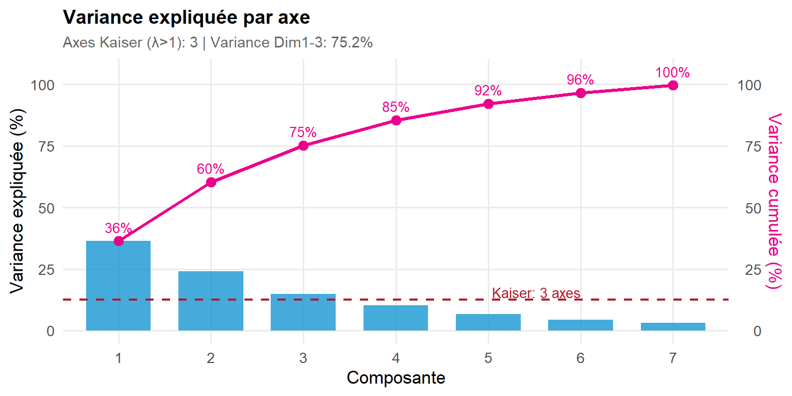
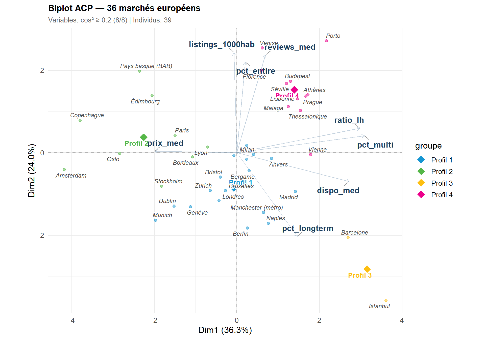

Airbnb en Europe : 37 marchés, 463 000 annonces
Quand la location courte durée redessine le logement urbain
460,489
annonces actives
39 villes · 18 pays européens
×4
écart de prix
Thessalonique (55 €) → Amsterdam (223 €)
41
L / 1 000 hab (max)
Porto vs 1.6 (Istanbul)
41 %
Top 5 = un tiers de l’offre
Londres, Paris, Rome, Istanbul, Lisbonne
En Europe, Airbnb est devenu un acteur structurant du tourisme urbain — et un sujet de politique publique majeur. Cette étude compare 36 marchés européens à partir des données ouvertes d’Inside Airbnb (juin 2025) : où la pression est-elle la plus forte ? Quels facteurs expliquent les écarts de prix ? La professionnalisation du marché bénéficie-t-elle au voyageur ou au territoire ?
La pression touristique : volume ne rime pas avec intensité
Les cinq premiers marchés — Londres (62 000 annonces), Paris (53 000), Rome (32 000), Istanbul (25 000) et Lisbonne (21 000) — totalisent un tiers de l’offre européenne. Mais ce classement par volume est trompeur : il ne dit rien de la pression réelle sur le tissu urbain.
Rapporter le nombre d’annonces à la population résidente renverse la hiérarchie. Porto (55 L/1 000 hab) et Lisbonne (38) se détachent nettement : ces villes consacrent une part disproportionnée de leur parc à la location touristique. Florence (31), Bordeaux (31,5) et Venise (26) suivent. À l’inverse, Istanbul, Berlin et Munich — pourtant pourvues de milliers d’annonces — restent sous le seuil de 3 L/1 000 hab.
En France, l’hétérogénéité est forte : Bordeaux (31,5) se hisse parmi les villes les plus exposées d’Europe, Paris (23,9) occupe le 7e rang, tandis que Lyon (10,1) reste trois fois plus en retrait.
Source : Inside Airbnb, juin 2025 · Population : ville-centre (Eurostat, recensements nationaux)
Concentration : cinq villes pèsent un tiers du marché
Le marché européen est fortement concentré. Les cinq plus gros marchés en volume — Londres, Paris, Rome, Istanbul et Lisbonne — captent à eux seuls un tiers de l’offre totale (33 %). Les 31 autres villes se partagent les deux tiers restants, ce qui pose la question de la représentativité des politiques calibrées sur les seuls « géants ».
Source : Inside Airbnb, juin 2025 · 36 villes européennes
Deux Europes tarifaires
Le quatuor premium — Amsterdam (223 EUR), Édimbourg (193), Copenhague (157) et Paris (156) — dépasse 155 EUR la nuit de médiane. À l’autre extrémité, Riga, Thessalonique, Budapest et Istanbul restent sous 70 EUR. Entre les deux, un gradient continu épouse la carte du niveau de vie européen.
Paris (156 EUR) se positionne dans le quatuor premium. Bordeaux (79 EUR) et Lyon (77 EUR) traduisent des marchés matures à tarification modérée, deux fois moins chers que la capitale.
Source : Inside Airbnb, juin 2025 · Prix convertis en EUR (taux mi-2025)
Plus de professionnels, des prix plus bas
Les marchés les plus professionnalisés — ceux où les gestionnaires multi-annonces dominent — ne sont pas les plus chers. C’est même l’inverse : la corrélation est négative (r = −0,41). Barcelone (81 % de multi-hosts, prix modérés) illustre la compétition par les volumes, quand Copenhague (16 % de multi-hosts, prix élevés) incarne le modèle du particulier sélectif. Paris occupe une position singulière : un taux de multi-hosts proche de la médiane (~50 %) mais un prix nettement supérieur.
Source : Inside Airbnb, juin 2025 · Corrélation de Pearson
La régulation laisse des traces lisibles
Sans registre centralisé des réglementations locales, on peut lire la régulation dans les données. Trois marqueurs se distinguent : la disponibilité annuelle médiane (Copenhague 106 jours, Amsterdam 111), le ratio listing/host proche de 1 (Berlin, Dublin), et la part de listings longterm imposant au moins 30 nuits de séjour minimum (Istanbul 50 %, Barcelone 42 %).
Les villes françaises se situent en zone intermédiaire : Paris affiche une disponibilité modérée et environ 20 % de longterm, un profil cohérent avec le cadre réglementaire français (120 nuits/an pour les résidences principales).
Source : Inside Airbnb, juin 2025 · Calcul : annonces avec minimum_nights ≥ 30
36 marchés sur la carte
Source : Inside Airbnb, juin 2025 · Géolocalisation manuelle des villes-centres
La carte révèle un double phénomène. D’un côté, les grands marchés de volume concentrés sur l’arc Londres–Paris–Rome. De l’autre, des villes plus petites — Porto, Florence, Bordeaux — où la pression par habitant atteint des niveaux inédits. La couleur des bulles dessine deux Europes tarifaires qui épousent la carte du pouvoir d’achat, avec quelques anomalies notables : Porto combine pression maximale et prix contenus, quand Amsterdam concentre premium tarifaire et faible professionnalisation.
Quatre profils de marché
Une analyse en composantes principales (ACP) permet de dégager les grandes structures du marché européen. Huit indicateurs sont projetés simultanément — prix, pression touristique, professionnalisation, disponibilité, activité review, ratio listing/host, part longterm et part de logements entiers — pour identifier les dimensions latentes qui organisent la diversité des 36 marchés.


ACP sur 8 indicateurs centrés-réduits · Classification hiérarchique ascendante (Ward, k=4)
La classification hiérarchique (méthode Ward) identifie quatre profils distincts :
Profil 1 — Marchés mainstream (Londres, Rome, Milan, Berlin, Madrid…) : 16 villes au profil médian — prix ~105 EUR, professionnalisation intermédiaire (60 % multi-hosts), pression touristique modérée. Le socle européen standard, incluant Bordeaux et Lyon côté français.
Profil 2 — Marchés premium (Paris, Amsterdam, Copenhague, Oslo, Édimbourg, Stockholm) : prix élevés (~157 EUR), très faible professionnalisation (27 % multi-hosts), disponibilité contrainte, quasi-absence de longterm. Le modèle du « particulier sélectif » dans les métropoles nordiques et capitales à fort pouvoir d’achat.
Profil 3 — Marchés régulés à longterm (Istanbul, Barcelone) : profils atypiques avec ~46 % de listings longterm, haute disponibilité (299 jours), très forte professionnalisation (78 %). La réglementation locale impose des séjours minimums élevés.
Profil 4 — Pression touristique forte (Porto, Lisbonne, Florence, Athènes, Venise…) : 12 villes à forte densité d’annonces (14,6 L/1 000 hab), très professionnalisées (73 %), activité review intense, prix accessibles (~89 EUR). La compétition par les volumes maintient des tarifs contenus.
Tableau récapitulatif
Source et méthodologie
Données : Inside Airbnb (sumlistings, juin 2025) — projet indépendant de collecte des annonces publiques.
Périmètre : 36 villes européennes, 19 pays, 452 000 annonces actives après nettoyage.
Pipeline : prix non null → disponibilité > 0 → hors hôtels → prix 10–1 000 EUR (taux de rétention ~70 %).
Population : ville-centre (Eurostat, recensements nationaux). Ce choix méthodologique majore les ratios par rapport aux estimations métropolitaines.
Taux de change : EUR mi-2025 pour 9 devises non-euro (GBP, HUF, TRY, DKK, CZK, NOK, SEK, CHF, EUR/LVL).
ACP : 8 variables centrées-réduites, FactoMineR. Classification hiérarchique ascendante (distance euclidienne, agrégation Ward, 4 classes).
Pour en savoir plus
- Vue mondiale — 64 villes — Cadrage international, benchmarking par continent
- Rapport complet — Analyse détaillée monde + Europe, 20 figures, panel-tabsets (64 villes)
- Notebook EDA — Exploration données, distributions, corrélations, code reproductible
- Présentation interactive — 14 slides RevealJS avec graphiques Plotly
- Dashboard interactif — Exploration libre avec sélecteur d’indicateurs (64 villes)
- Inside Airbnb — insideairbnb.com — Données ouvertes